freelance — content management & delivery
A scalable content management and delivery platform built for unreliable internet conditions. Resumable multipart uploads, real-time WebSocket chat, push notifications, and direct-to-cloud storage — a full backend + admin dashboard delivered as a freelance project.
A Django 6.0 + Daphne ASGI backend serves both REST (DRF) and WebSocket (Channels) traffic. A SvelteKit dashboard (pure SPA, Vercel-deployed) handles admin and moderator management. A mobile app (external team) consumes public endpoints. A single Redis instance powers the channel layer, the Huey task queue, and the Django cache — three subsystems from one instance.
REST API, WebSocket server (Channels), Huey background workers, JWT auth, ban system.
Admin/moderator panel — statistics, content CRUD, file upload orchestrator, real-time chat.
End-user content consumption app maintained by a separate team.
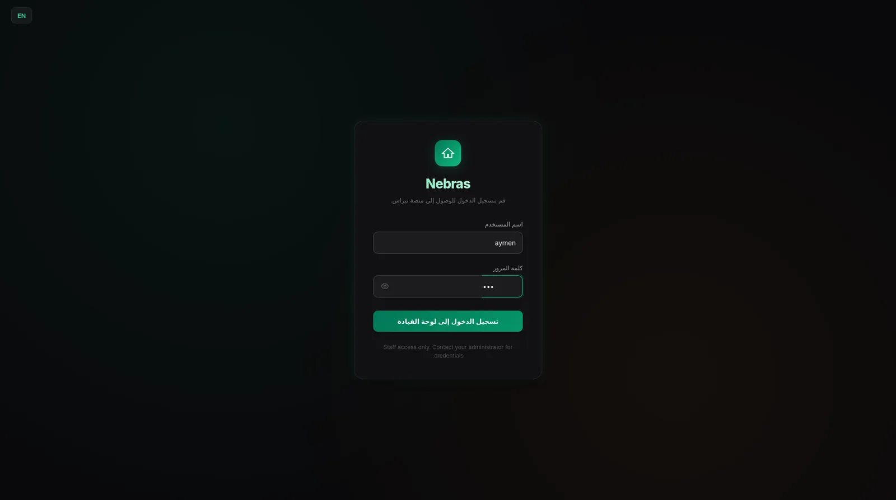
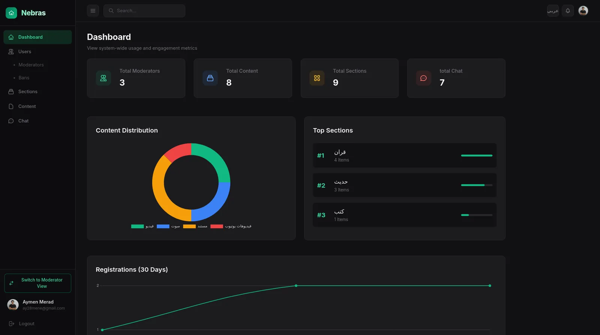
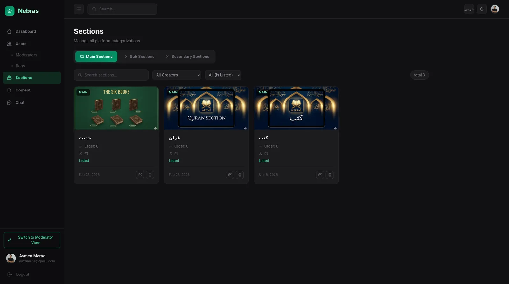
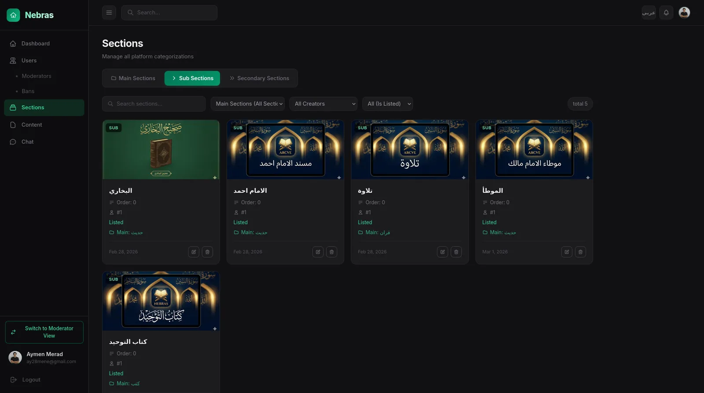
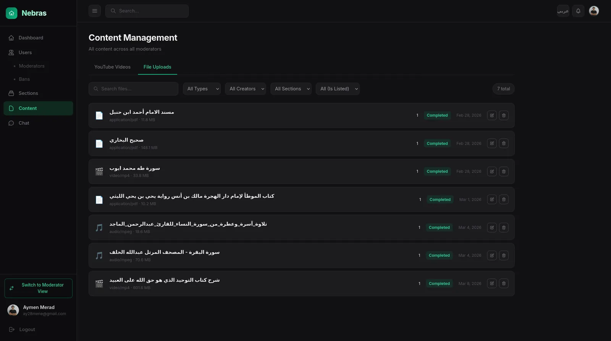
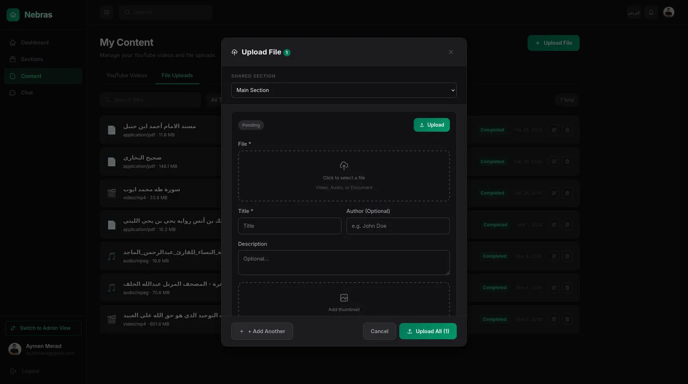
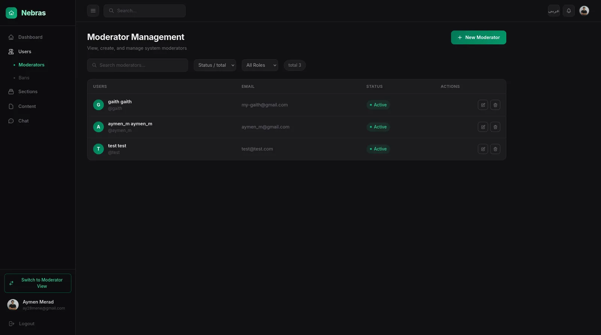
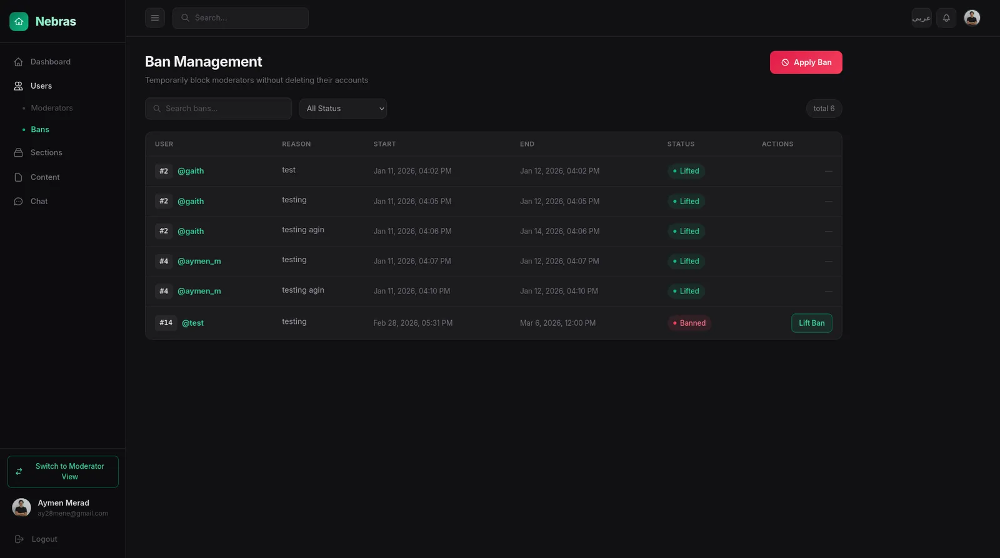
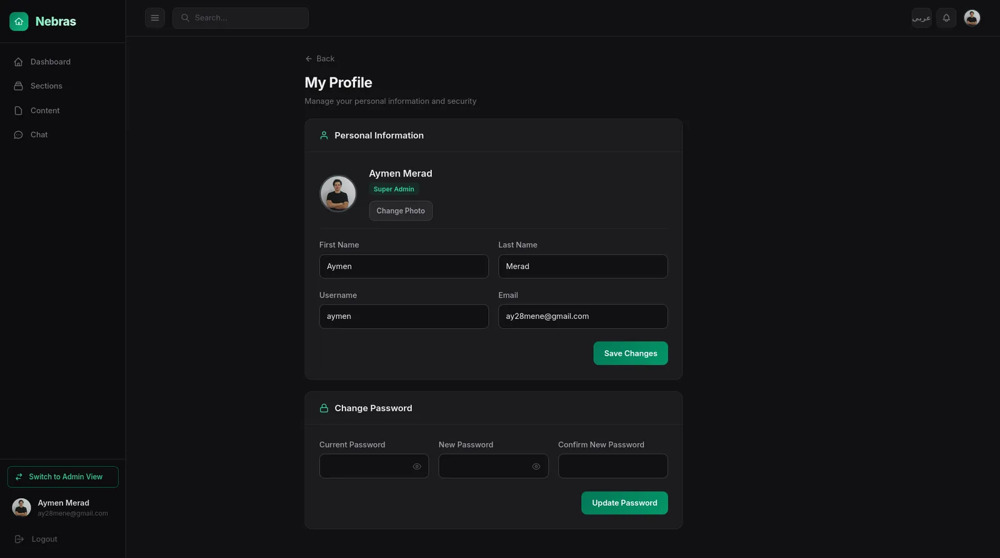
The standout engineering challenge. Files are routed by size: under 50MB uses a single presigned PUT, anything larger enters a multipart S3 flow with 10MB chunks. Each part is independently tracked in the database with its S3 ETag. When the connection drops — and in this market it drops often — the upload resumes from the last completed part. The file data never touches the Django server; it flows directly between the browser and Cloudflare R2 via presigned URLs.
Backend creates records + S3 multipart session. Returns file ID + upload type.
Presigned upload URL for the next incomplete part. Parallel uploads supported.
Browser PUTs bytes directly to R2. XHR for progress tracking. Abortable.
Backend validates all parts, calls S3 CompleteMultipartUpload, marks done.
A global staff chat room powered by Django Channels over a Redis channel layer. JWT-authenticated on connect, ban-enforced, rate-limited to 20 messages per 60 seconds. File attachments via a two-step REST + WebSocket handshake. Last 50 messages loaded on connect. Broadcasts across all connected processes via Redis pub/sub.
When new content is created, a Django signal enqueues a Huey task that sends Firebase Cloud Messaging push notifications to all registered devices. Four worker threads consume the queue — delivery never blocks the API. Devices that fail are auto-deactivated. Bilingual messages (English + Arabic).
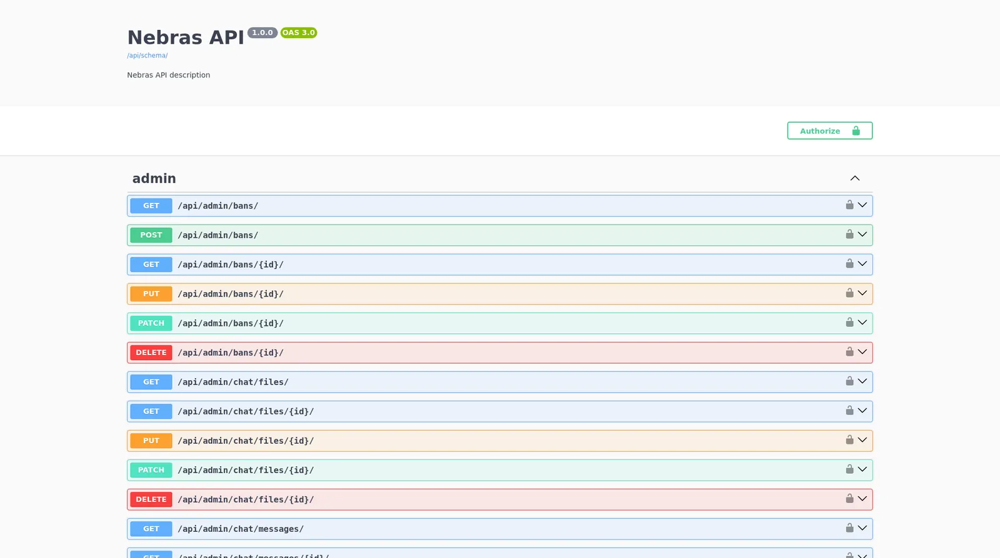
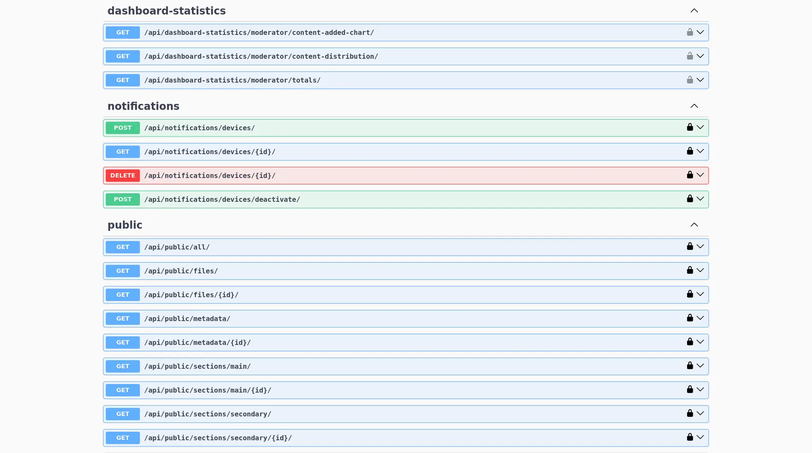